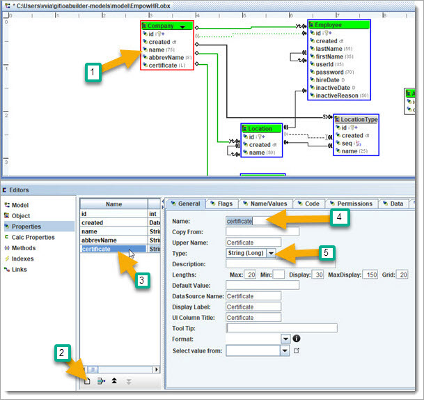
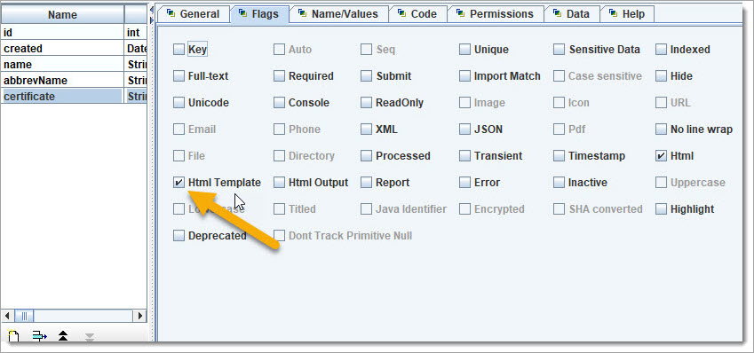
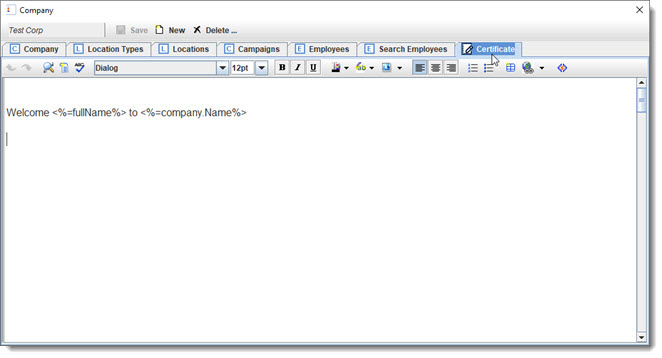
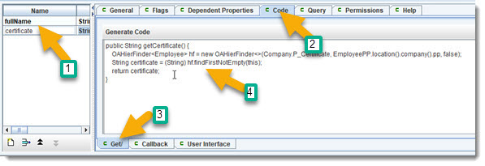

Regen and rerun as Single User.
Regen and rerun as Single User.
BizRule: we want to be able to create a "New Hire Certificate", welcoming new Employees to the Company.
We want to be able to have a template created for the Company or Location and allow it to be used for an Employee.
Click on the Company Object and create a new property.

A "String (Long)" is an unlimited length string.
Click on the flags tab, and check "Html Template". This will allow a styled html editor to be used to define a html template, with tags to insert dynamic data.

Regen and rerun as Single User.
 We will go over all the things that you can do with the editor in another tutorial. For now, it is worth noting that you can have a background image, which would make the certificate look great. Other data tags can be used to dynamically generate a report or pdf. Right click inside the editor to see all of the options.
What we want to do next is to allow Locations to have their own employee certificate, that would be used for instead of the (default) one that is in the Company.
Create the same project "certificate" in Location as you did for Company. Use copy and paste to save time. From the left side, right click on the Company.certificate
property and choose copy. Then right click on Location and choose paste.
Regen and rerun as Single User, and see how the Location now has a Certificate tab.
Now we want to be able "know" what certificate to use for an Employee. Both the Company and Location have a certificate property. We want to have the Employee.location checked first, and if empty then keep checking the parent Locations since it recursive, before using the Company.certificate.
To handle this, we will create a calculated property in Employee for "certificate" and use a finder to get the value. Click on the Employee Object and create a new
Calculated Property named "certificate".
Go to the "Dependent Property" tab and add property paths: "location.certificate", and "company.certificate".
For the "Code" tab, enter the following:

Regen and rerun as Single User, and see how the Employee Certificate tab matches the first
value found in Location or Company.
Note: setting a Location hierarchy would also follow the Location recursive hierarchy itself.